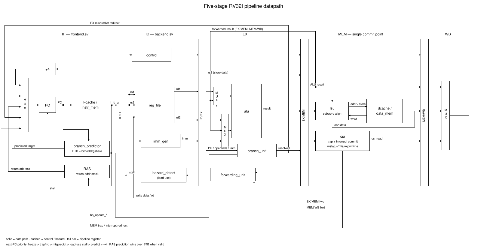
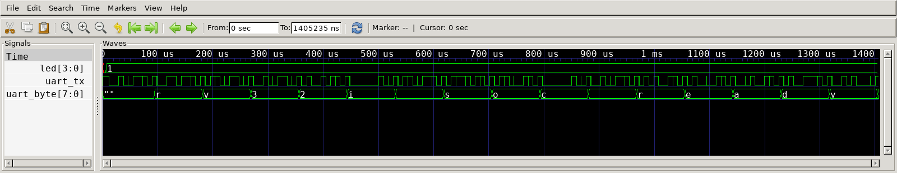
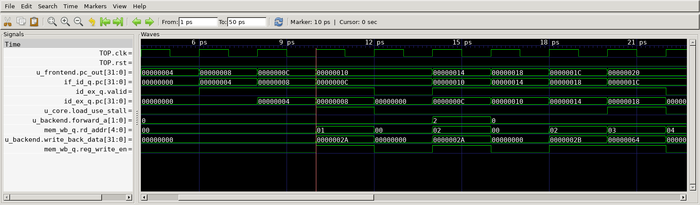
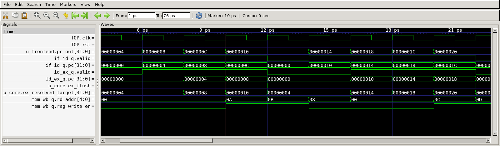
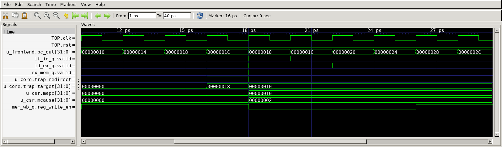
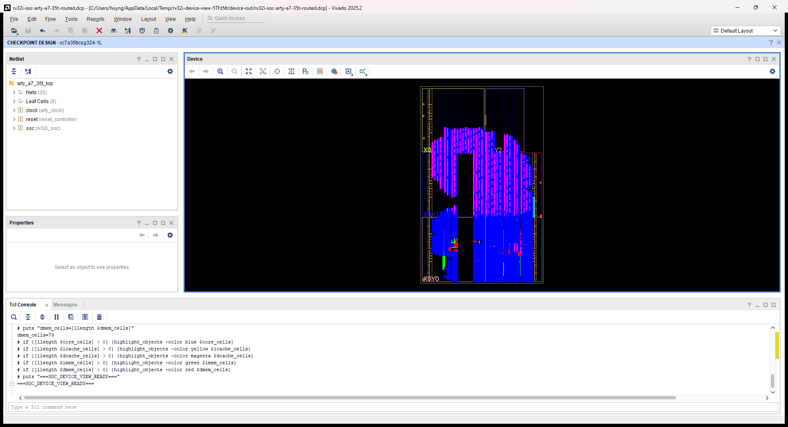

VeriCore project visuals
Original project datapath

Existing architecture diagram from the repository.
FPGA firmware boot — XSim post-route timing simulation

2026-10-20: SDF-annotated FPGA netlist, 50 MHz SoC constraint, +1.847 ns setup slack. UART boot and LED checks passed; DRC warnings remain in the FPGA report.
Load-use hazard

GTKWave screenshot of t07_load_use.vcd; directed test passed.
Branch recovery

GTKWave screenshot of t04_branch.vcd; directed test passed.
Illegal-instruction trap

GTKWave screenshot of t09_trap_illegal.vcd; directed test passed.
Original Vivado Device view

Historical routed SoC: 50 MHz constraint, +2.009 ns WNS. RTL d21ecd3fe310. No physical-board claim.